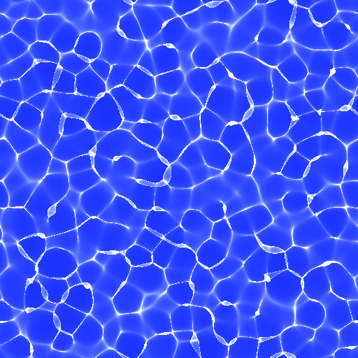
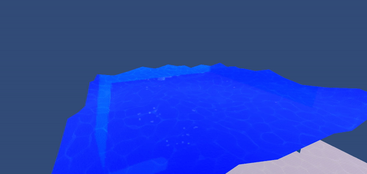
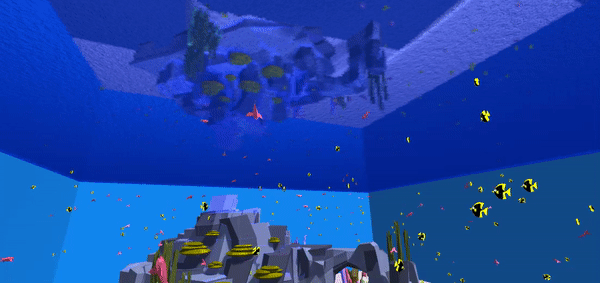

Overview
The goal of this project is to capture the beauty of the vanishing coral reef that is heavily
impacted by global warming, by simulating a flock of fish swimming in an ocean using Unity.
We picked Unity because it provided us the opportunity to learn and work with the most popular
game engine in the industry. Our original plan was to real-time simulate a flock in an “open” ocean.
However, flock simulation works better in an enclosed environment. So we made an aquarium instead.
With smaller environments, we could make a more detailed environment by hand crafting it ourselves
that also helped the flock to behave even more realistic. Moreover, the flock simulation went better
than expected so we can simulate more than one flock of fish, adding to the realism of our coral reef.
The final result is beautiful and hypnotising to look at while still running in real-time with a high
frame rate.
Final Project Video
Why we are doing this
I watch documentaries about the ocean and realize how beautiful it is, especially in the coral reef with different flocks of fish swimming gently in the ocean. Not everyone can go scuba diving whenever they want, but we can bring (virtual) ocean to you to enjoy. Moreover, according to the article byt BBC, "Great Barrier Reef has lost half of its corals since 1995," with climate change and its impacts on the coral reef ecosystem, I am afraid that the stunning visual of the coral reef might not last. So if our project can remind people of what they are going to lose and start to care about the ocean, that would count as an ultimate success for us.

|

|
Technical approach
Flock Simulation
The flock simulation is modeled as a sum of 4 different forces acting on each object in the flock. Each object has a perception radius and the forces are calculated based on neighbors in that radius. The forces are alignment, cohesion, separation, and obstacle avoidance.
|
|
|

|

|
For alignment, we steer the object toward the average velocity of its neighbors.
For cohesion, we steer the object toward the average position of its neighbors.
For separation, we make a vector from each neighbor to the current object and take the average of
those vectors across all neighbors.
For obstacle avoidance, we cast a ray toward the facing direction and find any terrain objects
intersecting the ray. If there is, compute a reflection vector if we bounced on that surface point.
Then, we steer the object toward that reflection vector.

|
Underwater Environment

|
For the underwater environment, we created 5 walls and a terrain to be both the background and bounding box for the flock simulation. We create water material for the top wall utilizing the Unity standard assets package that provides water texture and reflection.
Then we terraformed the terrain with Unity standard terrain tools to resemble a real ocean floor and added free sand texture into it. All of the objects are polygons with meshes for flock collision detection. The placement of these objects is to make the flock stand out and showcase the obstacle avoidance ability of the flocking algorithm.

|

|
For realism, we projected water caustic effects on both the ocean floor and surface. This caustic effect is made of an array of caustic frames, pre-generated by free software. This helped the underwater environment feel more dynamic.
|

|
Wave Simulation
The main idea of the Wave simulation is making a mesh of clothes to simulate the action of water waves by applying some functions on it.
Starting by creating a n by n mesh, which uses the knowledge we learned in course and project 1,
we can have clothes with size of n^2
We found that the perlin noise equation is commonly used in animations that simulate wave-like changes,
so in the second step we will use the perlin noise equation combined with the cosine equation
to simulate the wave changes.
The basic algorithm for wave function as below:
Changing of Scale -> S = S0 + vt
PN -> Perlin Noise function, which is given in Math.PerlinNoise
Perlin value = PN(Change of Scale of X/ Dimensions, Change of Scale of Z/ Dimensions) *2pi
Perlin value alternative= PN((Change of Scale of X + speed * time)/
Dimensions, Change of Scale of Z/ Dimensions )* 2Pi
New Z value = Cos(PerlinValue + timechange) * Change of Y
New Z value alternative = PerlinValueAlternative * Change of Y(Height)

|  |
The next step is coloring. We added a water material to this mesh, which originally didn't have any ocean color.At the same time, in order to make it show obvious effects underwater, we even added the reflection and refraction effects.
|  |
Result
When we move the flocking motion to 3D and spawn a lot of nemos and dorys, then we see the following behavior:

|

|

|
References
Boid algorithm
Assets from Unity Store
Standard Assets by Unity Technologies
Jiggly Buble Free by Moonflower Carnivore
Yughues Free Sand Material by Nobiax / Yughues
Polygonal Foilage Asset Package by Aligned Games
Contributions
Michael Ganzorig
Implemented the flock simulation algorithm in 2D and 3D and fine-tuned the constant
factors to make the simulation more realistic.
Pongsatorn Chanpanichravee
Created the underwater environment, edited videos, and made presentation material and website
Yu Jia Xu
Created the wave simulation, applied the refraction and reflection to make the scene more realistic.